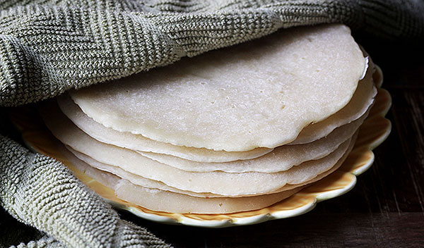

Gorassa

Description
A light, fluffy and absorbant pancake served alongside many sauce based dishes and stews
Ingredients
- 500g wheat flour
- 1/2 tsp baking powder
- 500ml water
- 1tsp salt
Steps
- Sift flour into a bowl.
- Add baking powder and salt and stir in water until batter is thick.
- Pour ladle-full of batter onto non-stick fat frying pan and flatten out until evenly spread.
- Fry at medium heat and flip when golden on one side.